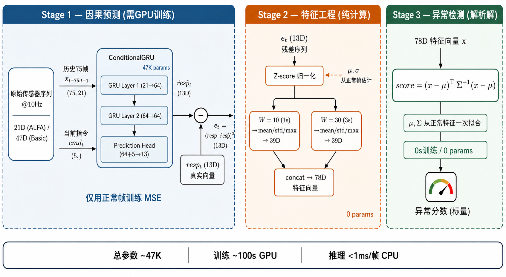
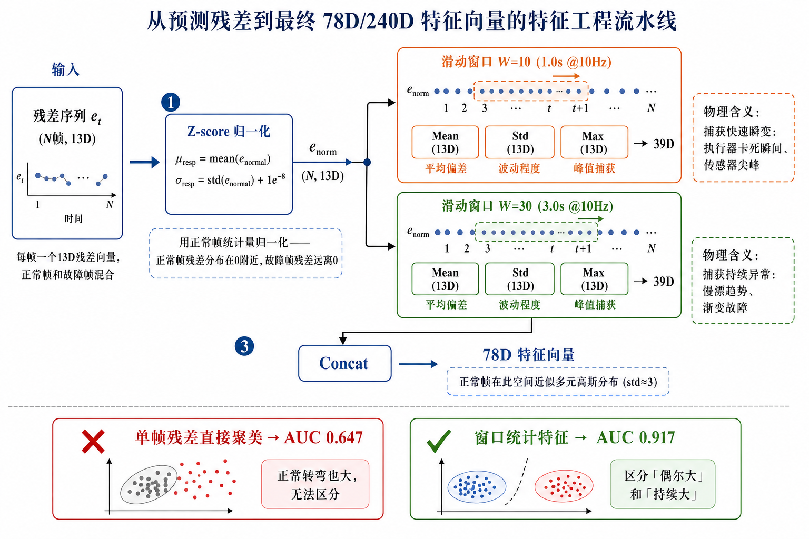

UAV ANOMALY DETECTION
UNSUPERVISED
TIME‑SERIES
从 Galaxy 聚类到马氏距离
无人机时序数据异常检测 — 架构演变与消融实验
ConditionalGRU
因果预测器
→
预测残差
(真实−预测)²
→
窗口统计
1s / 3s
→
马氏距离
(x−μ)ᵀΣ⁻¹(x−μ)
ALFA · 固定翼实飞 · 46 序列
MeanSeq AUC 0.951
Basic · 四旋翼 SITL · 70 序列
MeanSeq AUC 0.952
架构对比：Galaxy 原始 vs 本方案

保留的 Galaxy 思想
- 无监督：仅用正常数据训练
- 紧致性：正常样本越紧，异常越暴露
- 距离评分：到正常中心的距离 = 异常分数
差异
- AE → ConditionalGRU（因果预测）
- 数据重建 → 指令→响应预测
- SMM + GOF → 马氏距离
无人机时序数据异常检测
ALFA · Carbon Z 固定翼
| 来源 | Pixhawk 实飞, CMU AIR Lab 2018 |
| 规模 | 46 序列, ~47K 帧 @ 10Hz |
| 故障 | 执行器卡死: 发动机(23) / 副翼(8) / 方向舵(3) / 升降舵(2) |
| 特征 | 21D → 78D 窗口统计 |
| 特点 | 实飞噪声, 传感器少, 标签清晰 |
Basic · 四旋翼 SITL
| 来源 | ArduPilot SITL 仿真, 2022 |
| 规模 | 70 序列, ~275K 帧 @ 10Hz |
| 故障 | 传感器故障 6 种: GPS / 罗盘 / 陀螺 / 加计 / 气压计 / RC |
| 特征 | 47D → 240D 窗口统计 |
| 特点 | 传感器丰富, 帧量大, 仿真环境 |
核心挑战：时序数据不是独立样本——当前帧的"正常与否"依赖于过去几秒的飞行上下文。
直接套用 Galaxy 的问题：AE 不建模时间依赖，聚类也不利用时序结构。
直接套用 Galaxy 的问题：AE 不建模时间依赖，聚类也不利用时序结构。
适配思路：从空间建模到行为预测
Galaxy 做什么
把数据编码到一个"好的隐空间"
→ 在该空间聚类
→ 看新点离簇多远
空间建模路线：先降维，再聚簇
我们做什么
让模型学习"正常飞机如何响应指令"
→ 看真实响应偏离预测多远
→ 在偏差空间上检测异常
行为预测路线：先建世界模型，再找偏差
核心改动：用 ConditionalGRU 替代 Autoencoder
Galaxy
AE: X → z → X̂
学到"X 长什么样"
AE: X → z → X̂
学到"X 长什么样"
→
Ours
GRU: (历史₇₅, cmdₜ) → resp̂ₜ
学到"正常飞机应如何响应"
GRU: (历史₇₅, cmdₜ) → resp̂ₜ
学到"正常飞机应如何响应"
关键洞察：无人机有自然的因果结构——指令（驾驶员操作）→ 响应（传感器读数）。
利用这个结构，把"异常"定义为"响应偏离了因果规律的预期"。
利用这个结构，把"异常"定义为"响应偏离了因果规律的预期"。
三阶段端到端总览

ConditionalGRU 内部结构

残差 → 特征工程流水线

从 Galaxy 继承了什么，改变了什么
保留的 Galaxy 思想
| 无监督范式 | 仅用正常数据训练，不依赖故障标签 |
| 正常数据训练编码器 | ConditionalGRU 只在正常帧上学习 |
| 表示空间 | 残差窗口统计构成"异常检测空间" |
| 紧致性 = 检测力 | 正常特征越紧致，异常越暴露 |
| 距离 → 分数 | 到正常分布中心的马氏距离 → 异常分数 |
| 消融方法论 | 系统化消融实验驱动架构演进 |
替换 / 新增的部分
| AE 编码器 | → ConditionalGRU 因果预测器 |
| 从数据重建 | → 从指令预测响应 |
| 隐空间 | → 预测残差空间 |
| Gravity Loss | → 不需要（残差已足够紧致） |
| SMM 聚类 | → 马氏距离（发现 SMM 退化为 k=1） |
| EM 迭代 | → 协方差矩阵直接求逆 |
消融实验驱动的架构演进
| 版本 | 架构 | MSeq | 关键发现 |
|---|---|---|---|
| V3 | 双GRU + 309D + Galaxy AE | 0.908 | 309D 中 231D 纯属加噪 |
| V4 | Transformer 掩码预测 | 0.892 | 通道互预测性差，方向错误 |
| V5 | ErrorSequenceGRU + SMM | 0.897 | GRU 学不到有效误差模式 |
| V6 | 多任务共享 GRU | 0.884 | 逆向前向不可学，放弃共享 |
| V7 h=10 | 单GRU + 78D 窗口统计 + SMM | 0.932 | 极简 > 复杂；GRU > LSTM/Conv/TCN |
| V7 h=75 | 单GRU + 78D + Galaxy AE 128→64 | 0.945 | 7.5s 覆盖完整机动周期 |
| 最终 | 单GRU + 78D/240D + 马氏距离 | 0.951 / 0.952 | 省去 AE / SMM / Gravity Loss |
关键消融实验数据
编码器对比 (Basic 14seq)
| 编码器 | MSeq | Δ |
|---|---|---|
| GRU 64×2L | 0.932 | — |
| LSTM 64×2L | 0.909 | −0.023 |
| Conv1d k3×3L | 0.886 | −0.046 |
| TCN residual k3 | 0.815 | −0.117 |
检测方法对比 (Basic 70seq)
| 方法 | MSeq | 训练时间 |
|---|---|---|
| GRU 隐状态聚类 | 0.878 | — |
| Galaxy AE+SMM k=5 | 0.938 | 81s |
| Deep SVDD v2 | 0.939 | 207s |
| 马氏距离 | 0.952 | 0s |
其他消融
| 历史窗口 10→75帧 | 0.932 → 0.942 | 指令窗口 K=1→3 | 0.942 → 0.926 |
| 采样率 25Hz→10Hz | 0.860 → 0.938 | 独立CSV→主CSV | 0.857 → 0.938 |
关键发现：Galaxy SMM 在两个数据集上均退化为 k=1
ALFA · 78D · 35,980 正常帧
簇 0 · 0 █
簇 1 · 35,980 ████████████████
簇 2 · 0 █
簇 3 · 0 █
簇 4 · 0 █
100% 落入单一簇，4/5 空置
Basic · 240D · 147,045 正常帧
簇 0 · 0 █
簇 1 · 0 █
簇 2 · 0 █
簇 3 · 147,045 ████████████████
簇 4 · 0 █
100% 落入单一簇，4/5 空置
Gravity Loss 将正常帧压至极端紧致 → SMM 多簇能力完全未用到 → Galaxy 实际等价于 k=1 马氏距离。在两个完全不同的飞行器、故障类型、数据规模上独立验证，结论一致。
检测方法性能对比
Basic 四旋翼 (70 序列)
| 方法 | MeanSeq | 训练 | 参数 |
|---|---|---|---|
| GRU 隐状态聚类 | 0.878 | — | 0 |
| SMM direct k=5 | 0.920 | — | — |
| Galaxy AE+SMM | 0.938 | 81s | 300K |
| Deep SVDD v1 | 0.938 | 68s | 150K |
| Deep SVDD v2 | 0.939 | 207s | 176K |
| 马氏距离 | 0.952 | 0s | 240² |
ALFA 固定翼 (46 序列)
| 方法 | MeanSeq |
|---|---|
| SMM direct k=5 | 0.942 |
| Galaxy AE+SMM k=5 | 0.945 |
| 马氏距离 | 0.951 |
马氏距离在两个数据集、不同特征维度上均一致超越 Galaxy AE+SMM
按故障类型的检测性能
Basic · 传感器故障 (马氏距离)
| 故障类型 | 序列 | Mean AUC |
|---|---|---|
| 陀螺仪 | 10 | 0.998 |
| 加速度计 | 10 | 0.998 |
| RC 遥控 | 10 | 0.955 |
| 罗盘 | 10 | 0.954 |
| GPS | 10 | 0.892 |
| 气压计 | 10 | 0.875 |
ALFA · 执行器故障 (马氏距离)
| 故障类型 | 序列 | Mean AUC |
|---|---|---|
| 方向舵 | 4 | 0.992 |
| 发动机 | 23 | 0.989 |
| 副翼 | 8 | 0.890 |
| 升降舵 | 2 | 0.691 |
硬故障近乎完美 (0.99+)；慢漂故障（气压计/GPS）和卡中位（升降舵）仍是瓶颈
现有问题与讨论
已验证成立的
- 无监督异常检测范式在无人机时序数据上非常有效
- 仅用正常数据训练的编码器可以学到有判别力的表示
- 残差窗口统计空间天然紧致——Galaxy 的紧致性假设正确
- 距离基础的评分机制有效且可解释
想与 Galaxy 团队讨论的
- Gravity Loss 是否总是趋向于单簇？什么条件下会形成多簇？
- SMM 的多簇能力在什么类型的数据上才能被充分利用？
- 是否可以在 Gravity Loss 中加入簇间排斥项来防止坍缩？
- 时序数据的异常检测：预测残差路线 vs 直接表示路线？
- 如何从数据本身推断合适的 k 值？
仍需解决的问题和改进方向
当前算法瓶颈
| 气压计慢漂 | Basic 0.875 — 3s 窗口内信号 <5m |
| GPS 冻结 | Basic 0.892 — 部分序列保持最后有效值 |
| 升降舵卡中位 | ALFA 0.691 — 仅操纵瞬间暴露 |
| 端侧部署 | 7.5s 历史缓冲占嵌入式内存 |
可能的改进方向
- 更长窗口 — W=60(6s) 针对慢漂故障
- 物理模型融合 — 气压计/GPS 漂移用动力学辅助
- 多传感器互校验 — GPS vs 视觉, 气压计 vs IMU 积分
- 故障分类 — 当前只输出分数，可加分类头
- 半监督 — 极少量故障标注做微调
- 自适应阈值 — 按飞行阶段动态调整
当前方法对硬故障（陀螺/加计/发动机失效）近乎完美 (0.99+)。
剩余挑战集中在物理上更难检测的慢漂故障——可能需超越纯数据驱动，引入飞行动力学先验。
剩余挑战集中在物理上更难检测的慢漂故障——可能需超越纯数据驱动，引入飞行动力学先验。